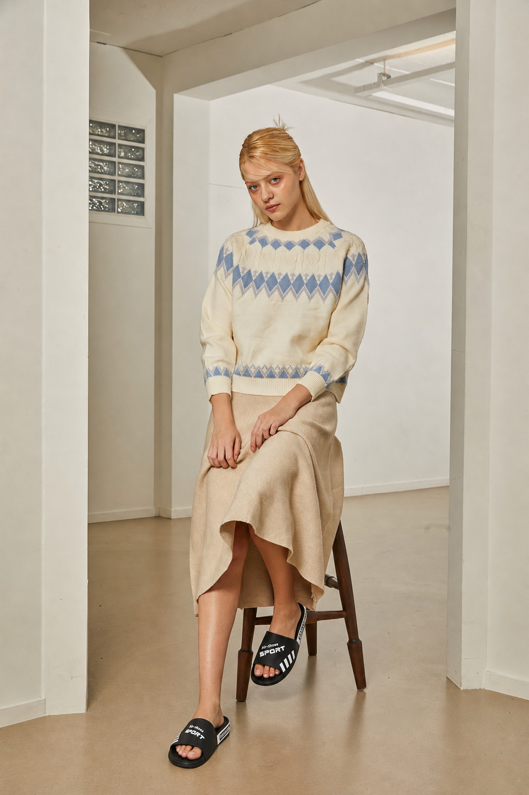
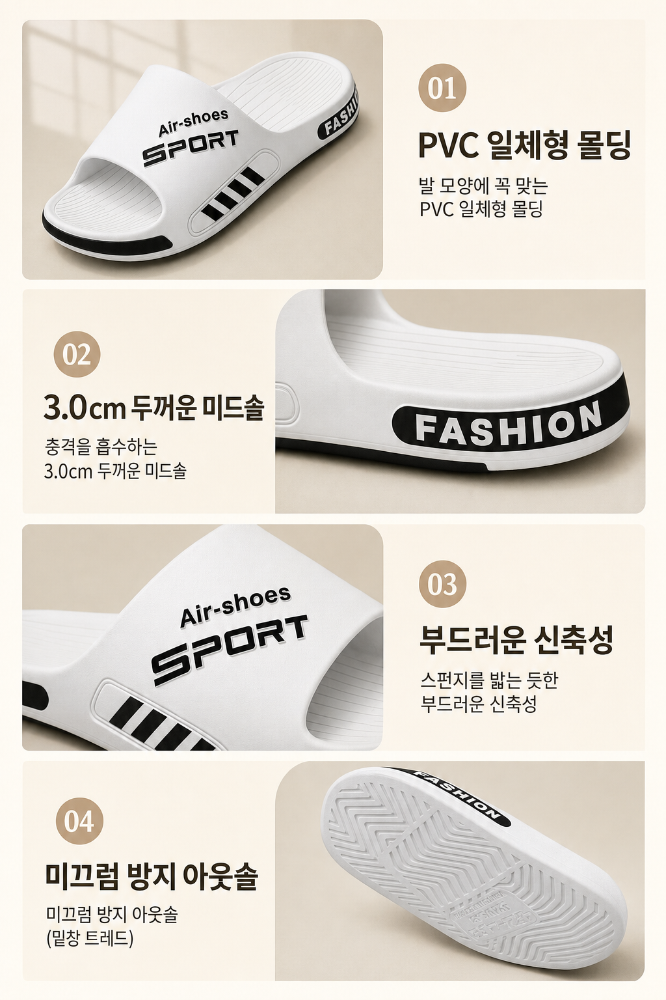
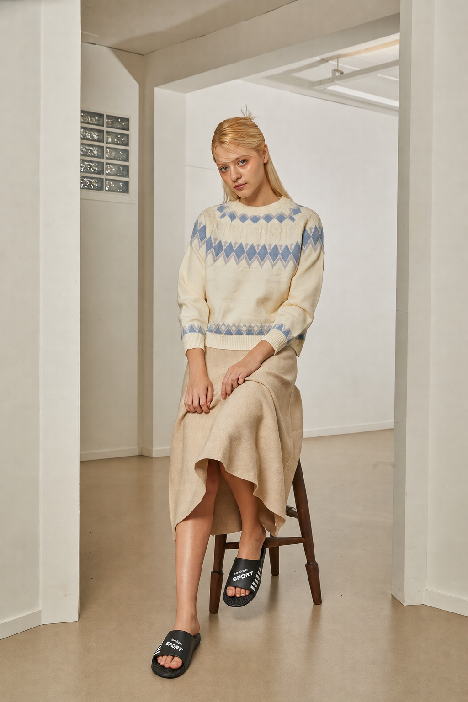
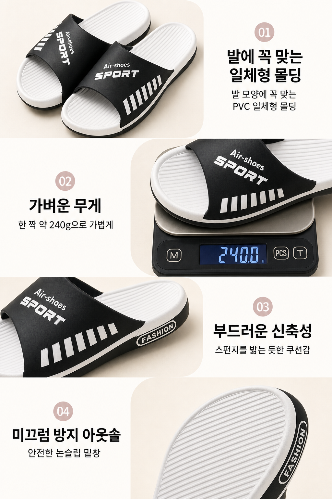

0. 무신사 원본 + 컷46,304px · 빨강=섹션컷 파랑=2:3하드컷

v8-2v8 → gpt-image-2 업글
생성 대기gpt-image-2 i2i로
v8 방식 재생성 (다음 빌드)
v8 방식 재생성 (다음 빌드)
v10-ds대상 복제 + 스타일보드 앵커


v10-non-ds대상 복제 · DS 없음


왼쪽=대상 원본 전체 + 컷 가이드 / 오른쪽으로 각 방식 결과. ⚠️ 아직 v8-2·풀 v10은 생성 대기 (프레임 먼저)



